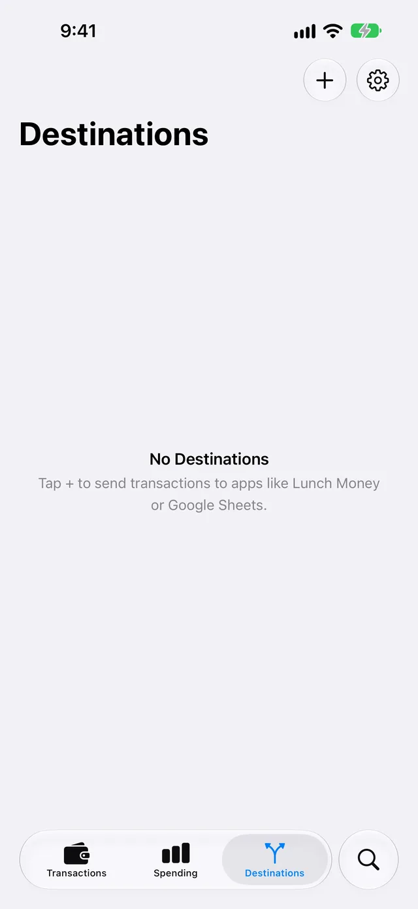

Send Apple Card transactions to GitHub
WalletFeed writes your Apple Card, Apple Cash and Savings transactions from your iPhone to a private GitHub repository. Each month gets one file, in Beancount, hledger or Ledger, or CSV format. You make a token in GitHub, then you paste the token in WalletFeed.
Before you start
You must have these items:
- An iPhone with iOS 26 or a newer version
- WalletFeed, with access to your Wallet accounts
- WalletFeed Pro (a subscription with a 1-week free trial, or a one-time Lifetime purchase)
- A GitHub account with a verified email address
- A private repository in GitHub with one or more files, for example a README file. You can use the repository of your ledger.
WalletFeed is available only in the US. WalletFeed writes only to private repositories. It does not write to a public repository or to an internal repository of an enterprise.
Your token stays on your iPhone
- WalletFeed keeps the personal access token in the Keychain on your iPhone. iOS encrypts the Keychain.
- The personal access token does not go to iCloud Keychain or to your other devices.
- WalletFeed has no account, and no WalletFeed server keeps the personal access token. No person at WalletFeed can see or get the personal access token.
- Your iPhone sends the personal access token only to GitHub, in each request to GitHub.
- When you delete the destination, WalletFeed deletes the personal access token from your iPhone. You can also delete the token in GitHub.
Step 1: Open the GitHub form in WalletFeed
-
On your iPhone, open WalletFeed.
-
Tap Destinations.
-
Tap + at the top of the screen.

-
In the search field, type
GitHub. -
Tap GitHub.
-
If WalletFeed shows WalletFeed Pro, get WalletFeed Pro.
Result: After you get WalletFeed Pro, WalletFeed shows the GitHub form.
-
In Each Month, select how each month gets to GitHub: Commit, Pull Request or Commit and Issue.
For more information, refer to Each month in GitHub. Do this step first, because the token gets the permissions for this selection.
Step 2: Make a personal access token in GitHub
The GitHub documentation tells you that personal access tokens are "intended to access GitHub resources on behalf of yourself". For long-lived integrations, GitHub recommends a GitHub App. WalletFeed uses a token that you make, and the token stays on your iPhone. For more information, refer to Your token stays on your iPhone.
- With the token, WalletFeed reads your private repositories and their branches. In the repository that you select, WalletFeed writes the month files. It also opens pull requests or issues, if you select them.
- WalletFeed also makes branches that start with
walletfeed/, for example for Send Test. - You can delete the token in GitHub (refer to Delete the token in GitHub).
Do these steps:
-
At the end of the GitHub form in WalletFeed, tap Create Token.
Result: GitHub opens the page for a new fine-grained token. The page has the name WalletFeed, an expiration of 366 days and the permission Contents. For Pull Request, it also has the permission Pull requests. For Commit and Issue, it also has the permission Issues.
-
If GitHub shows Sign in, type your GitHub email address and password.
-
If the repository is in an organization, select the organization in Resource owner.
-
In Repository access, select Only select repositories.
-
Select your repository.
-
Tap Generate token.
-
Copy the token.
The token starts with
github_pat_.
Step 3: Paste the token in WalletFeed
-
In WalletFeed, paste the token in Personal Access Token.
Result: WalletFeed shows Repository and Branch. Repository shows the private repository with the most recent change.
-
If Repository does not show your repository, select it in Repository.
-
In Branch, select the branch for the files.
WalletFeed starts with the default branch of the repository.
-
In Format, select Beancount, hledger or Ledger or CSV.
-
If you keep files in a different folder, change Path.
For example,
transactions/{yyyy}/{yyyy}-{mm}.beancountgivestransactions/2026/2026-10.beancountfor October 2026. Path must contain{yyyy}and{mm}. -
To use a different commit message, type the message in Commit Message.
If Commit Message is empty, the message is like "Add Apple Card transactions for October 2026". You can use
{yyyy},{mm}and{month}in the message. -
For Beancount or hledger, change the account names in Accounts if your ledger uses different names.
For more information, refer to The accounts in each file.
-
Tap Add.
Result: WalletFeed makes sure that the token can write to the repository. WalletFeed does not change the repository for this.
-
When WalletFeed shows Send Transactions to GitHub?, tap Send.
If you tap Cancel, WalletFeed removes the new destination.
The Send Transactions to GitHub? message tells you that the repository receives one file 5 days after each month ends. It also tells you the data in each file and the accounts. It gives the start date, or "including earlier ones" if Initial History is All.
In Destinations, the destination has the name GitHub · your-name/your-repository.
Step 4: Add the accounts to your ledger
The files from WalletFeed do not open the accounts.
For Beancount, your ledger must open each account one time. Add an open line for each account in your main file, for example:
2020-01-01 open Liabilities:AppleCard
2020-01-01 open Assets:AppleCash
2020-01-01 open Assets:AppleSavings
2020-01-01 open Expenses:Uncategorized
2020-01-01 open Income:Uncategorized
2020-01-01 open Assets:Transfers
Then add an include line with a pattern for the month files, for example include "transactions/**/*.beancount".
For hledger, add an include line with a pattern for the month files, for example include transactions/**/*.journal. If you use strict mode, also add an account line for each account, for example account liabilities:apple card.
For Ledger, add an include line for each month file, for example include transactions/2026/2026-10.journal. Ledger does not accept a pattern in an include line.
If an account name has {category}, open the account for each WalletFeed category. For example, Expenses:{category} gives Expenses:Dining, Expenses:Groceries and Expenses:Other.
Step 5: Find the month in GitHub
WalletFeed writes the file for a month only one time. It writes the file 5 days after the end of the month. During these 5 days, most pending charges from the end of the month post.
-
Wait until the 6th day of the next month.
-
On your iPhone, open WalletFeed.
Result: WalletFeed writes the file for the month that ended. For example, on November 6, 2026, it writes
transactions/2026/2026-10.beancount. -
On a computer, open your repository in GitHub.
With Commit, the file is on the branch. With Pull Request, a pull request has the file. With Commit and Issue, an issue has a hyperlink to the file.
WalletFeed also writes the file on that day or after it when one of these occurs:
- WalletFeed gets a change from Wallet with Background Sync.
- An automation starts.
- iOS starts WalletFeed while your iPhone is on a charger.
If a month has no transactions for the destination, WalletFeed does not write a file for that month.
Each month in GitHub
Each Month has three options:
| Option | What GitHub gets 5 days after the month ends | Token permissions |
|---|---|---|
| Commit | A commit with the file of the month, on the branch | Contents |
| Pull Request | A branch with the file of the month, and a pull request to your branch, for example "Apple Card transactions, October 2026" | Contents and Pull requests |
| Commit and Issue | The commit, then an issue with the same title, a hyperlink to the commit and the text of the file | Contents and Issues |
If your branch has protection or if a workflow examines each pull request, use Pull Request. The names of the branches from WalletFeed start with walletfeed/.
GitHub does not send you an email for a pull request or an issue that your token opens. To get these emails, select the option for your own updates in the notification settings of GitHub.
If you change Each Month on the screen of the destination, the change applies to the next months. If the token does not have the permission for the new option, add the permission to the token in GitHub.
The accounts in each file
Each transaction has two postings. The first posting is the Wallet account. The second posting is one of these accounts:
| Transaction | Account |
|---|---|
| A transfer or a payment, in the two directions | Transfers |
| A refund | Money Out |
| A different purchase, fee or charge | Money Out |
| A different credit, for example Daily Cash or interest | Money In |
The two sides of a transfer between two Wallet accounts go to Transfers, and they cancel. When you add the payment from your bank to your ledger, use the same Transfers account. If Transfers has a balance, one side of a transfer is not in your ledger.
An Apple Cash payment to a person or from a person can also go to Transfers. This payment has only one side in Wallet, so it stays in Transfers. Move it to the correct account in your ledger.
These are the account names at the start:
| Row | Beancount | hledger or Ledger |
|---|---|---|
| Apple Card | Liabilities:AppleCard |
liabilities:apple card |
| Apple Cash | Assets:AppleCash |
assets:apple cash |
| Savings | Assets:AppleSavings |
assets:apple savings |
| Money Out | Expenses:Uncategorized |
expenses:unknown |
| Money In | Income:Uncategorized |
income:unknown |
| Transfers | Assets:Transfers |
assets:transfers |
For hledger or Ledger, Currency sets how dollars show: USD or $. Use the same symbol as your journal. hledger counts $ and USD as two different commodities.
Data that GitHub receives
The collaborators of the repository and its GitHub Actions workflows can read the files that WalletFeed writes. Git keeps each version of a file in the history of the repository. A pull request or an issue from WalletFeed shows the number of transactions and the total of the month. An issue also shows the file. GitHub can send these to the people who watch the repository in an email.
Each file contains the transactions of one month from the Wallet accounts for the destination. A Beancount or hledger file starts with a comment line, for example ; Apple Card transactions, October 2026, from WalletFeed. The transactions are in date sequence.
| From Wallet | In the file |
|---|---|
| Date | The date of the transaction on your iPhone, for example 2026-10-28 |
| Status | * for a posted transaction, ! for a pending charge |
| Merchant | The payee. If Wallet has no merchant name, the payee is the description. |
| Description | In Beancount, the narration, if it is different from the payee |
| Amount and currency | The two postings. Purchases have a minus sign on the Wallet account. |
| Category | category:, if the category is not Other |
| Card statement text | statement:, if it is different from the payee |
| Amount in a different currency | foreign:, for example 6.20 EUR |
| WalletFeed ID | walletfeed-id: |
A CSV file has the columns of a WalletFeed CSV file, with the newest transaction first. For the columns, refer to CSV files.
You can change the accounts, add tags and add balance assertions in the files. WalletFeed does not change a file after it writes the file.
New and changed transactions
WalletFeed puts each transaction in the file for the month of the transaction date. WalletFeed writes each file only one time. Thus, the file does not get changes after that time.
A pending charge has the flag !. Compare these transactions with your statement, and make these changes in your ledger:
- If the amount of a pending charge changes when the charge posts, change the amount.
- If a pending charge becomes a declined charge after WalletFeed writes the file, delete the charge.
- If Wallet removes a transaction after WalletFeed writes the file, delete the transaction.
- If Wallet adds a transaction to a month after WalletFeed writes the file, add the transaction.
If a file for the month is in the repository before WalletFeed writes it, WalletFeed does not change that file. The destination then shows "October 2026 was already in the repository, so WalletFeed left it." A file that WalletFeed wrote before for that month does not cause this message.
Send previous transactions
A new GitHub destination also receives previous transactions from the start date in Settings › Sync › Initial History. Initial History is All until you change it. WalletFeed moves the start date to the first day of its month. Thus, each file has all the transactions of its month.
If you added previous months to your ledger by hand, set the start in Initial History after the last of these months. Do this before you add the destination.
WalletFeed writes the files for the previous months after you add the destination, one month at a time, with 10 seconds between the months. With Pull Request, all the previous months go in one pull request, for example "Transactions before October 2026". With Commit and Issue, the previous months get no issues.
Each previous month is one commit. If your repository has a workflow for each push, add [skip ci] to Commit Message before you add the destination.
To get files for the previous months that have no file in the repository, use Send History:
- In WalletFeed, tap Destinations.
- Tap the GitHub destination.
- Tap Send History.
- Tap 30 Days, 90 Days, 1 Year or All.
WalletFeed then writes a file for each previous month in the period, if the repository has no file for that month.
To write a month again with new account names, do these steps:
- In GitHub, delete the file for the month.
- In WalletFeed, delete the destination.
- Add the destination again, with the new account names.
Send a test
Send Test writes a file with a test purchase to the branch walletfeed/…/test, not to your branch.
-
In WalletFeed, tap Destinations.
-
Tap the GitHub destination.
-
Tap Send Test.
Result: The test branch gets the file
walletfeed-test.beancount(or.journalor.csv), in the folder of the month files. With Pull Request, GitHub shows the pull request "WalletFeed test". With Commit and Issue, GitHub shows the issue "WalletFeed test". -
If GitHub shows the pull request "WalletFeed test", close it. Do not merge it.
-
After the test, delete the test branch in GitHub.
Change or remove the destination
Send only some transactions
- In Destinations, tap the destination.
- Set Filter to on.
- Set Include, Minimum, Accounts, Categories or Exclude.
WalletFeed uses the new filter for the files that it writes after the change. The filter of a GitHub destination always includes pending charges, so that each charge gets into a file.
Change the commit message or the accounts
- In Destinations, tap the destination.
- Change Each Month, Commit Message, the names in Accounts or Currency.
The change applies to the months that WalletFeed did not write. To use a different repository, branch, format or path, delete the destination and add it again.
Stop the destination for a time
- In Destinations, tap the destination.
- Set Enabled to off.
When you set Enabled to on again, WalletFeed writes the files for the months that ended during that time.
Make a new token for the destination
- On a computer, open GitHub.
- Click your profile picture.
- Click Settings.
- Click Developer settings › Personal access tokens › Fine-grained tokens.
- Click Generate new token.
- In Token name, type
WalletFeed. - In Repository access, select Only select repositories. Then select the repository of the destination.
- In Permissions, set Contents to Read and write.
- If Each Month is Pull Request, set Pull requests to Read and write.
- If Each Month is Commit and Issue, set Issues to Read and write.
- Click Generate token.
- Copy the token.
Replace the token
Do these steps before the token expires. The screen of the destination shows the date in Token Expires, if GitHub gives it. When 14 days or less remain, the destination shows "Your GitHub token expires on November 5, 2027. Replace the token." (with the date of your token).
-
Make a new token (refer to Make a new token for the destination).
-
In WalletFeed, tap Destinations.
-
Tap the destination.
-
Tap Replace Token.
-
Paste the new token.
-
Tap Replace.
WalletFeed keeps the new token only if the token can write to the repository of the destination.
Remove GitHub from WalletFeed
-
In Destinations, tap the destination.
-
Tap Delete.
-
Tap Delete again.
The files, pull requests and issues stay in GitHub.
Delete the token in GitHub
- On a computer, open GitHub.
- Click your profile picture.
- Click Settings.
- Click Developer settings › Personal access tokens › Fine-grained tokens.
- Click the WalletFeed token.
- Click Delete.
After you delete the token, WalletFeed cannot write to GitHub with it.
If there is a problem
First, use Send Test (refer to Send a test). If the test branch gets the test file, WalletFeed can write to the repository.
In the GitHub form, WalletFeed examines the token again when the token changes. To make WalletFeed examine the same token again, delete the token in Personal Access Token, then paste it again.
If WalletFeed shows "Token rejected (HTTP 401)"
The token is not correct, or GitHub deleted it.
- Make a new token (refer to Step 2).
- Paste the new token in Personal Access Token.
If WalletFeed shows "The token reaches no private repository"
The token has no access to a private repository, or the organization did not give approval for the token.
- On a computer, open the token in GitHub.
- In Repository access, add your repository.
- If the repository is in an organization, ask an owner of the organization for approval.
- In WalletFeed, delete the token in Personal Access Token, then paste it again.
If WalletFeed shows "This repository is empty"
GitHub cannot add a branch to a repository that has no files.
- In GitHub, add a README file to the repository.
- In WalletFeed, delete the token in Personal Access Token, then paste it again.
If WalletFeed shows "The token can't write files"
The token does not have the permission Contents with Read and write.
- On a computer, open the token in GitHub.
- In Permissions, set Contents to Read and write.
- Click Update.
- In WalletFeed, tap Add again. If you added the destination before, WalletFeed tries again after some time.
If WalletFeed shows "The token can't open pull requests" or "The token can't open issues"
The token does not have the permission for Pull Request or Commit and Issue.
- On a computer, open the token in GitHub.
- In Permissions, set Pull requests or Issues to Read and write.
- Click Update.
- In WalletFeed, tap Add again. If you added the destination before, WalletFeed tries again after some time.
If WalletFeed shows "The token can't write to private repositories"
The token is a classic token without the repo scope.
- Make a fine-grained token (refer to Step 2).
- Paste the new token in WalletFeed.
If WalletFeed shows "GitHub refused the request"
GitHub did not accept the request for a different cause, for example a limit of your organization.
- On a computer, open the token in GitHub.
- Make sure that the token has access to the repository and has the permissions in Each month in GitHub.
If WalletFeed shows "Another destination writes to this path"
A different GitHub destination writes to the same path in the same repository and branch.
- Change Path, for example to
cash/{yyyy}/{yyyy}-{mm}.beancount.
If WalletFeed shows "Include {yyyy} and {mm}"
Path does not have {yyyy} and {mm}.
- Change Path, for example to
transactions/{yyyy}/{yyyy}-{mm}.beancount.
If WalletFeed shows "WalletFeed can't write to this path"
GitHub or Git does not accept a file at the path. For example, the path starts with /, has .. or .git, or starts with .github/.
- Change Path, for example to
transactions/{yyyy}/{yyyy}-{mm}.beancount.
If WalletFeed shows "Shorten the path"
Path has more than 400 characters, or a folder name or the file name has more than 255 characters.
- Change Path to a shorter path.
If WalletFeed shows "Remove < > : | ? * and quotation marks from the path"
Git for Windows cannot use these characters in a file name.
- Remove the characters from Path.
If WalletFeed shows "Don't end a folder or file name with a space or a dot"
Git for Windows cannot use a folder name or a file name that ends with a space or a dot.
- Remove the space or the dot from Path.
If WalletFeed shows "Name every account"
A row in Accounts is empty.
- Type an account name in each row of Accounts.
If WalletFeed shows "Use {category} only in Money Out and Money In"
{category} is in Apple Card, Apple Cash, Savings or Transfers. WalletFeed puts the category only in Money Out and Money In.
- Remove
{category}from that row.
If WalletFeed shows "Start with Assets, Liabilities, Equity, Income or Expenses"
A Beancount account name must start with one of these five words.
- Change the account name, for example to
Expenses:Food.
If WalletFeed shows "Use letters, numbers and dashes. Start each part with a capital"
Beancount does not accept the account name. Each part between two colons must start with a capital letter or a number, and must not have spaces.
- Change the account name, for example to
Expenses:FoodCourt.
If WalletFeed shows "Use single spaces, no semicolons, and don't start with ( or ["
hledger and Ledger do not accept the account name. The name has two spaces together, a semicolon, a tab or an empty part, or it starts with ( or [.
- Change the account name, for example to
expenses:food court.
If the Each Month footer shows "main is protected, so GitHub may refuse commits"
Your branch has protection, or a rule of the repository accepts changes only in a pull request.
- In Each Month, select Pull Request.
If the Each Month footer shows "main has rules that may refuse WalletFeed's commits"
A ruleset of the repository can refuse the file or the commit, for example its extension or its message.
- In GitHub, open the rulesets of the repository.
- Make sure that the rules accept the path and the commit message from WalletFeed.
If the Each Month footer shows "GitHub's rules refuse new branches here"
A ruleset of the repository does not let WalletFeed make branches. Pull Request and Send Test make branches.
- In Each Month, select Commit, or change the ruleset in GitHub to accept branches that start with
walletfeed/.
If the destination shows "GitHub refused the commit to main"
Your branch has protection, or a rule of the repository accepts changes only in a pull request.
- In Destinations, tap the destination.
- In Each Month, select Pull Request.
If the destination shows "A rule on main refused WalletFeed's commit"
A ruleset of the repository does not accept the file or the commit, for example its extension or its message.
- In GitHub, open the rulesets of the repository.
- Change the rule, or change Commit Message in WalletFeed.
If the destination shows "A rule in your-name/your-repository refused WalletFeed's branch"
A ruleset of the repository does not let WalletFeed make branches. Pull Request, the previous months with Pull Request, and Send Test make branches.
- In GitHub, open the rulesets of the repository.
- Change the ruleset to accept branches that start with
walletfeed/, or select Commit in Each Month.
If the destination shows "Issues are off"
The repository does not have issues.
- In GitHub, open the settings of the repository.
- In Features, select Issues.
If the destination shows that the repository is public or internal
WalletFeed writes only to private repositories.
- In GitHub, make the repository private.
If the destination shows that GitHub archived the repository
GitHub does not accept changes to an archived repository.
- In GitHub, unarchive the repository.
If the destination shows that the branch is gone
The branch of the destination is not in the repository.
- Delete the destination.
- Add the destination again, and select a branch.
If the destination shows "The repository is gone, or the token can't reach it"
GitHub deleted the repository, or the token has no access to it.
- In GitHub, add the repository to the token in Repository access.
- If the token has access, replace the token (refer to Replace the token).
If the destination shows "The token expired" or "Your GitHub token expires"
The token is at the end of its expiration period, or it is near the end.
- Make a new token (refer to Make a new token for the destination).
- Replace the token (refer to Replace the token).
If the destination shows "Authorize the token for your organization's single sign-on"
The organization uses single sign-on, and the token does not have authorization for it.
- In GitHub, authorize the token for the organization. For the steps, refer to GitHub's instructions for single sign-on.
If the destination shows "GitHub's rate limit is reached"
GitHub accepts a limited number of requests in a period. WalletFeed sends the month again after some time.
- Wait one hour, then open WalletFeed.
If the destination shows "Rejected (HTTP 409)"
A different change to the same file or branch occurred at the same time. WalletFeed sends the month again after some time.
- Wait some minutes, then open WalletFeed.
If the destination shows "Authentication failed"
GitHub does not accept the token.
- Replace the token (refer to Replace the token).
If the destination shows "October 2026 was already in the repository"
The repository has a file at the path of the month, and WalletFeed did not change it. If the message has a number of months, for example "3 months were already in the repository", it is the same for each of these months.
- If you made the file for the month, do nothing.
- To get the file from WalletFeed for a month before the start of the destination, delete the file in GitHub. Then use Send History (refer to Send previous transactions).
- To get the file from WalletFeed for a month after the start of the destination, delete the file in GitHub. Then delete the destination, and add it again.
If Destinations shows "Sync Requires Pro"
You do not have WalletFeed Pro at this time. WalletFeed keeps the destination but does not write the files.
- In Destinations, tap Upgrade.
- If you got WalletFeed Pro before, tap Restore Purchases.
- To get WalletFeed Pro for the first time, select a plan.

Related
Updated November 4, 2026